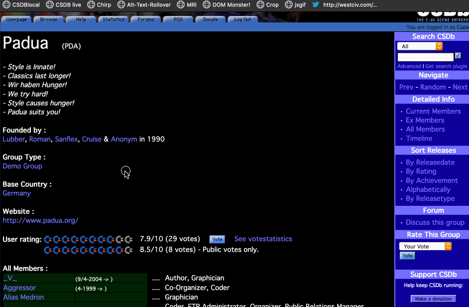

This bookmarklet adds a preview functionality to the Commodore Scene Database CSDB. Often your don't remember the name but what a release looked like and I found this makes it easier.
Simply drag the following link to your browser bookmarks bar:
Here you can see the bookmarklet in action. On any page with releases on CSDB you can click the bookmarklet and a preview window appears. You can drag the window wherever you want. Moving your mouse over any of the links now displays the image connected to the releases. 
All code by Chris Heilmann. You can take a look at the source and contribute on Github.